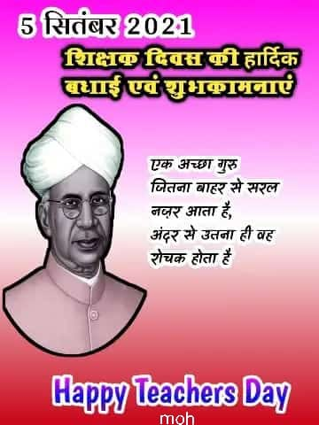
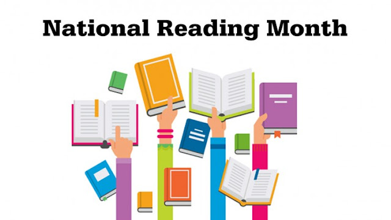
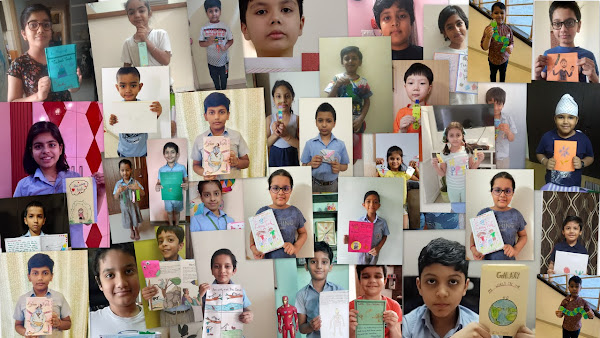
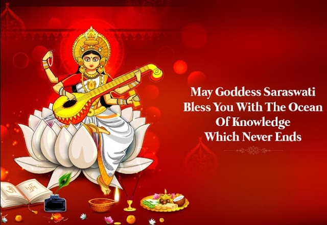

Sunday, September 5, 2021
HAPPY TEACHERS DAY
Wednesday, August 11, 2021
NATIONAL LIBRARIANS DAY 12th AUGUST
12th august is celebrated as national librarian's day. 2. “August 12th is
being celebrated as National Librarian's Day in India, in remembrance of
national professor of library science, Dr S R Ranganathan (1892-1972),
who had spearheaded library development in India.

Saturday, June 19, 2021
NATIONAL READING DAY CELEBRATION
Reading day is celebrated to Honour the father of 'Library movement in Kerala' late Sh.
P. N. Panicker. Jaypee Public School Greater Noida Library, has decided to celebrate 19th
June as Reading Day.
CLICK HERE ⇰ NATIONAL READING MONTH
DIGITAL READING MONTH CELEBRATION


Thursday, May 6, 2021
LIBRARY DAY CELEBRATION IN APRIL 2021,VARIOUS ACTIVITIES BY STUDENTS
Tuesday, April 13, 2021
NAVRATRI FESTIVAL STORIES
नवरात्रि क्यों मनाई जाती है? माँ दुर्गा और महिषासुर के बीच नौ दिनों तक भयंकर युद्ध हुआ और
दसवें दिन माँ दुर्गा ने महिषासुर का वध कर दिया। इस दिन को अच्छाई पर बुराई की जीत के रूप
में मनाया जाता है। एक दूसरी कथा के अनुसार, भगवान राम ने लंका पर आक्रमण करने से पहले
और रावण के संग युद्ध में जीत के लिए शक्ति की देवी माँ भगवती की आराधना की थी।
Why do we celebrate Navratri twice a year?
Both these Navratris as the name goes are
celebrated for nine continuous days in honour
of Shakti or the mother goddess who
is also referred to as Durga, Sherawali Maa or Parvati
in different parts of
India. ... All these causes contribute to the celebration of Navratri twice
every year.
Thursday, February 25, 2021
ALL THE BEST FOR YOUR EXAMS!
Thursday, February 18, 2021
FAVOURITE PERSON BIOGRAPHY DONE BY ANGEL 5 A
NEWS BULLETIN BY STUDENTS


Tuesday, February 16, 2021
Importance of Basant Panchami
सरस्वती मंत्र
ॐ ऐं ह्रीं क्लीं महासरस्वती देव्यै नमः।
A day dedicated to Goddess Saraswati, who is believed to confer knowledge, music and arts,
Basant Panchami or Saraswati Puja is an important Hindu festival that marks the culmination of
winter and the arrival of spring.
Wednesday, February 3, 2021
WHEN WINTER COMES WRITTEN BY - NANCY VAN LAAN